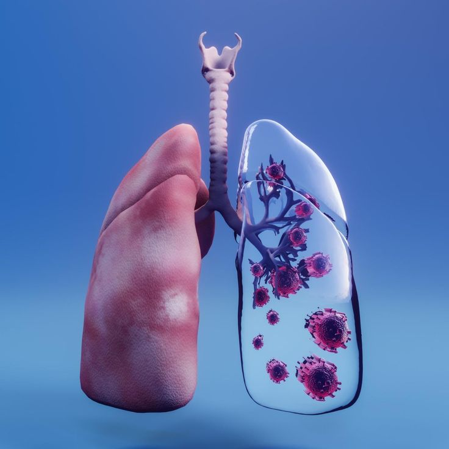

Selamat Datang di Sistem Deteksi Bronkopneumonia
Solusi Cerdas untuk
Deteksi Dini Penyakit Paru
Aplikasi ini dirancang untuk membantu mendeteksi bronkopneumonia dari citra X-ray secara otomatis menggunakan algoritma machine learning dengan pendekatan ekstraksi fitur GLCM, HOG, dan LBP.
- Akurasi tinggi menggunakan model Support Vector Machine (SVM).
- Ekstraksi fitur citra berbasis tekstur dan tepi.
- Dapat diakses langsung melalui perangkat mobile.